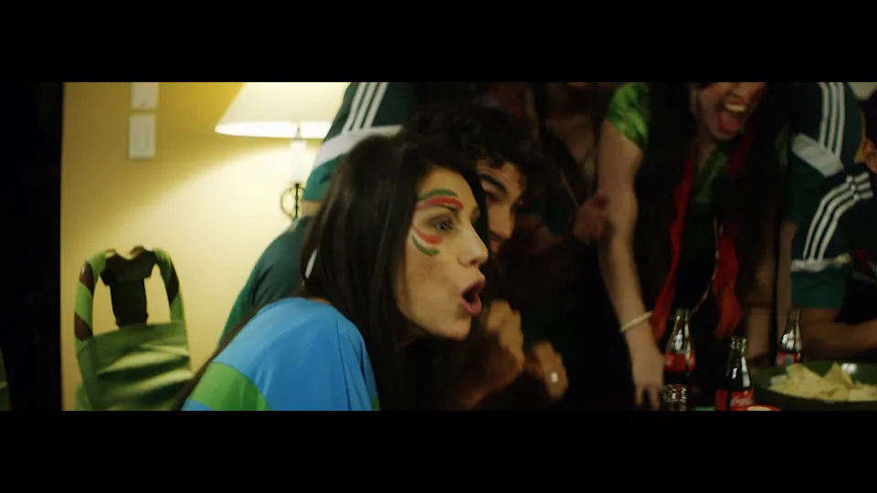
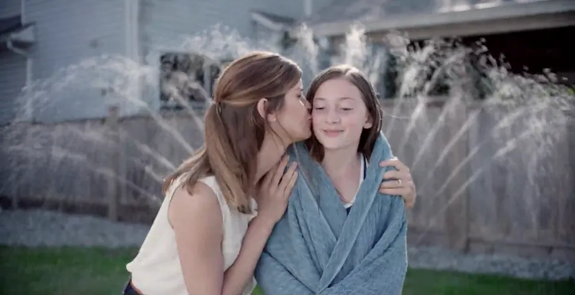
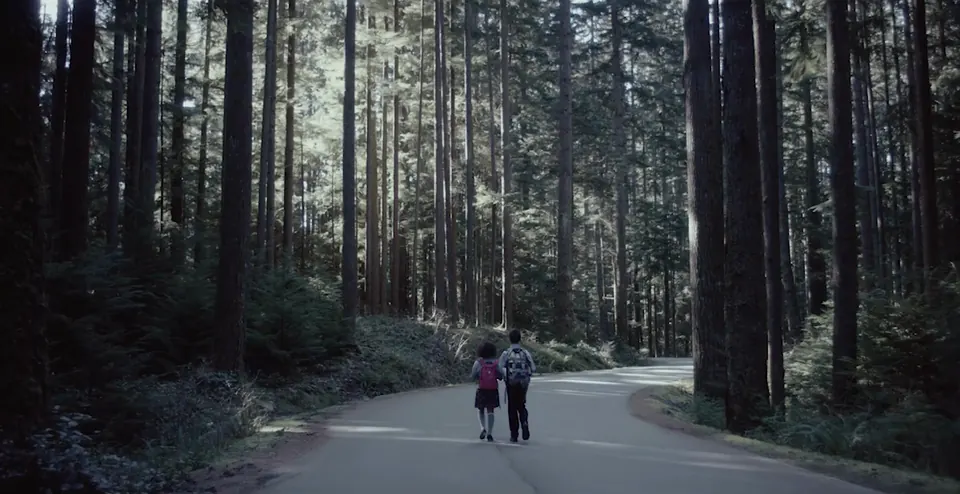
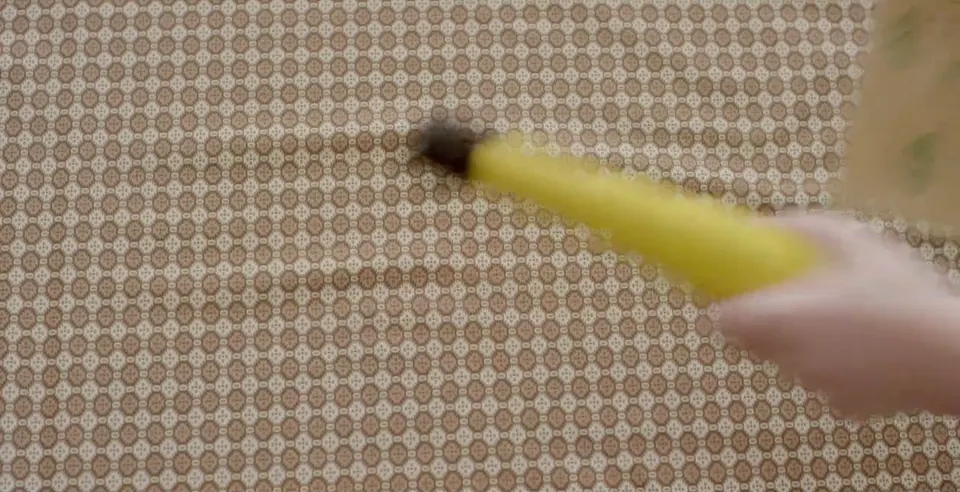
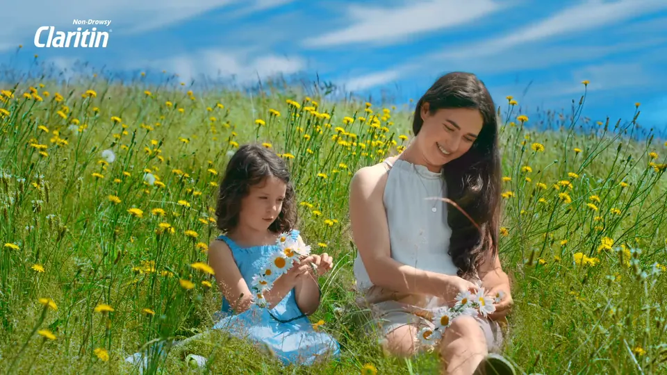
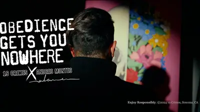
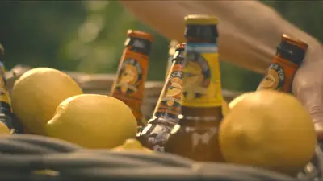
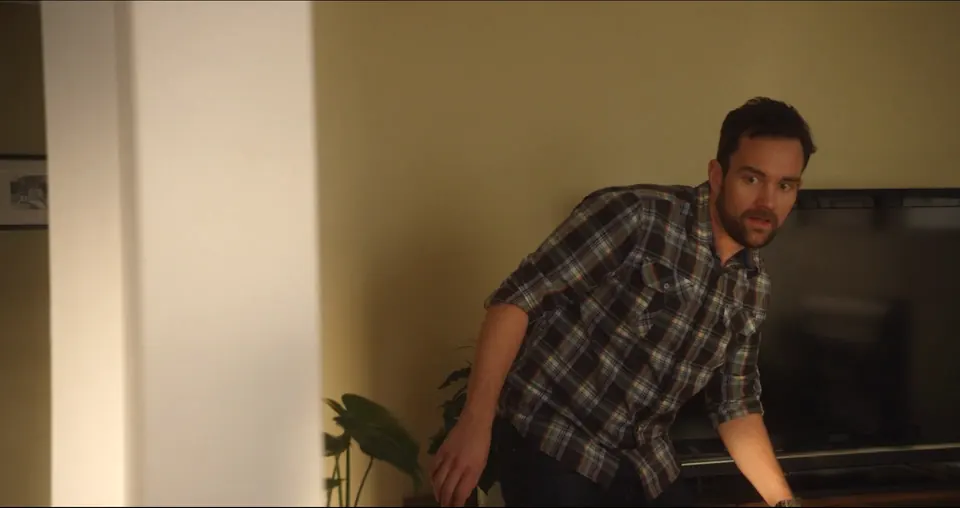
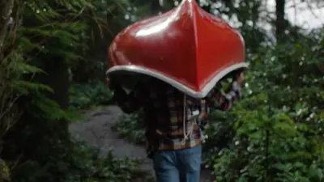
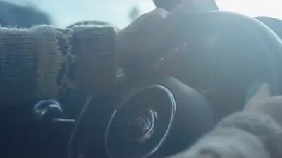

All work
Films
 Weird KidDirector · Director of Photography
Weird KidDirector · Director of Photography SleepwalkerDirector of Photography
SleepwalkerDirector of Photography Repeat (feat. Jessie Reyez)Allan Rayman
Repeat (feat. Jessie Reyez)Allan Rayman Back to the StartOld Man Canyon
Back to the StartOld Man Canyon Verona’s ObsessionAllan Rayman
Verona’s ObsessionAllan Rayman Phantoms & FriendsOld Man Canyon
Phantoms & FriendsOld Man CanyonCommercials

CelebracionesCoca-Cola · Cinematographer LegendsBMW · Cinematographer
LegendsBMW · Cinematographer Stay GoldAXE · Cinematographer
Stay GoldAXE · Cinematographer Just The BeginningBONSAI · Cinematographer (joint effort with Ryan)
Just The BeginningBONSAI · Cinematographer (joint effort with Ryan) DriftBMW · Cinematographer
DriftBMW · Cinematographer- Golden Moment (director’s cut)AXE · Cinematographer

Cover With Love: IsabelleBand-Aid · client No Place Like HomeBig Brothers Big Sisters of Canada · client
No Place Like HomeBig Brothers Big Sisters of Canada · client
The Smell Needs To GoYara · client Brew Bar: Coffee TeaserA&W · client
Brew Bar: Coffee TeaserA&W · client
ExplorersHuggies · client Sun KissedJohn Frieda · client
Sun KissedJohn Frieda · client
Flower CrownClaritin · client S18Arc’teryx · Cinematographer
S18Arc’teryx · Cinematographer Let’s Grow Good Together
Let’s Grow Good Together
Obedience Gets You Nowhere19 Crimes x Malamen · client FireWild Leaf · client
FireWild Leaf · client Modern ManBraun · client
Modern ManBraun · client
Summer Is HereShock Top · client Eat WellWestin Hotels & Resorts · client
Eat WellWestin Hotels & Resorts · client
Buddy Time: Grandpa’s StoryLEGO · client HikeWild Leaf · client
HikeWild Leaf · client
CanoeWild Leaf · client
Journeys x ToddFIAT · client
 Cinematography Demo Reel 2025
Cinematography Demo Reel 2025 joio.coCups, paddles, spatulas
joio.coCups, paddles, spatulas SpaceIndustrial design
SpaceIndustrial design SoundReleases
SoundReleases Gone Are the Days of YesterdayMothers Moniker
Gone Are the Days of YesterdayMothers Moniker